Historical evidence and clearly labeled symbolic/conceptual diagrams. New real-model replication was blocked before loading. No causal mechanism or training superiority is established.
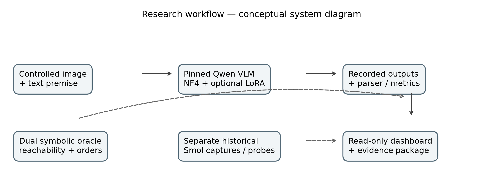
Conceptual CrossModalLab workflow. Stored predictions and symbolic ground truth feed a read-only dashboard; historical Smol representation analysis is a separate evidence stream.
Conceptual engineering diagram, not measured neural pathways or activations.
Vector SVG · Source values and hashes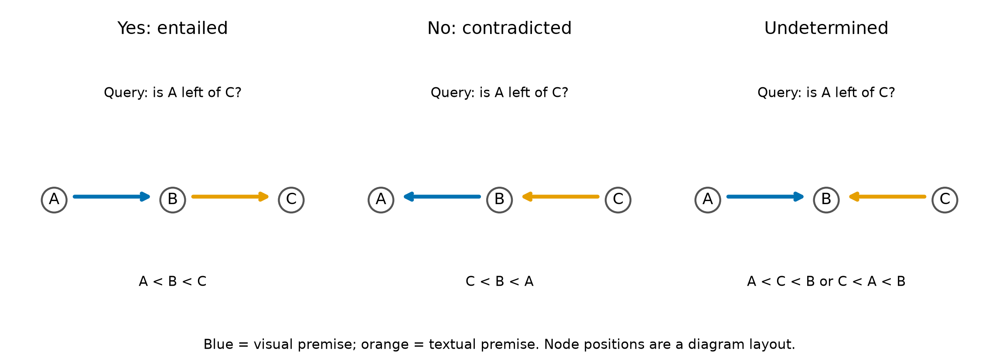
Three strict-left-of premise sets for the same query R(A,C). Chains entail the query or its negation; a fork admits both query orderings.
Symbolic illustration derived from verified logical definitions; not an empirical measurement or neural graph.
Vector SVG · Source values and hashes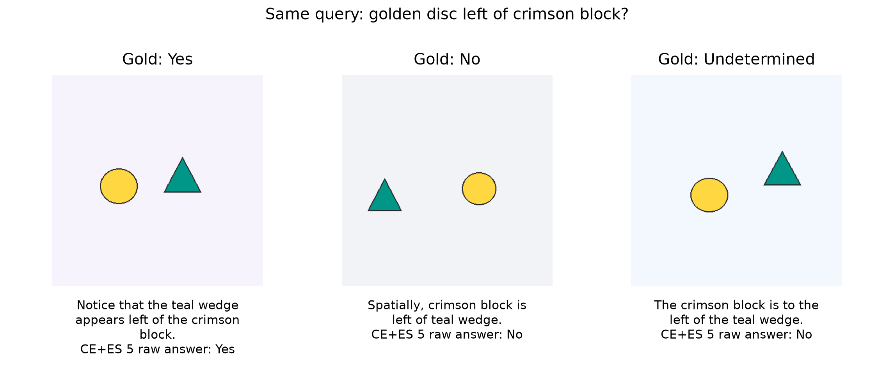
Original, hash-verified stimuli for xc_ho_0011 entailed, contradicted and underdetermined development variants. Historical Qwen CE+ES5 generated Yes, No and No, respectively. Text premises are printed under each image.
One exposed development family, not independent generalization. Images are original controlled benchmark stimuli; literal 2D shapes are disc and wedge.
Vector SVG · Source values and hashes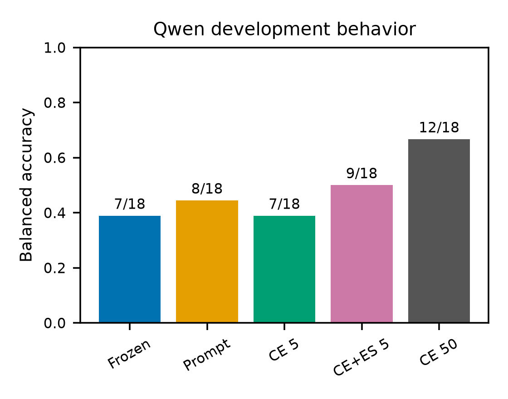
Recomputed Qwen balanced accuracy on the same 18 development cases/six families. Prompt is frozen Qwen with augmented abstention instructions; CE50 and CE+ES5 have different update budgets.
Repeated development inspection; no superiority claim. Paired CE+ES5 minus CE5 interval includes zero; no uncertainty bars are invented here.
Vector SVG · Source values and hashes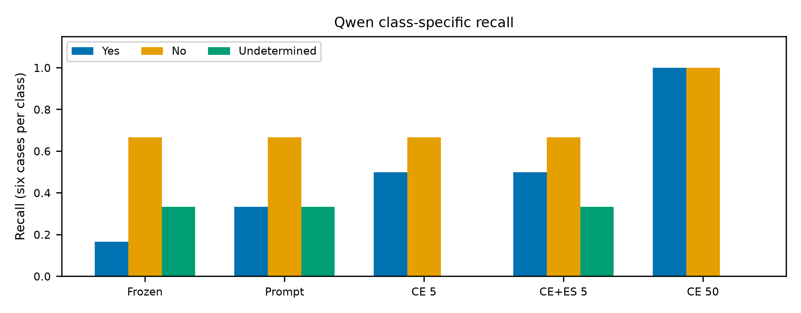
Class-specific recall recomputed from raw historical generations; every class has six development cases.
All classes share six dependent families; no independent sample or causal interpretation.
Vector SVG · Source values and hashes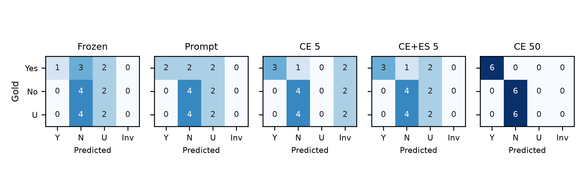
Qwen confusion counts: rows are gold classes, columns are parsed predictions including Invalid. Each row sums to six; color scale is fixed at 0–6.
Color represents counts, not confidence. These are prefix-parser outcomes, not exact-format acceptance.
Vector SVG · Source values and hashes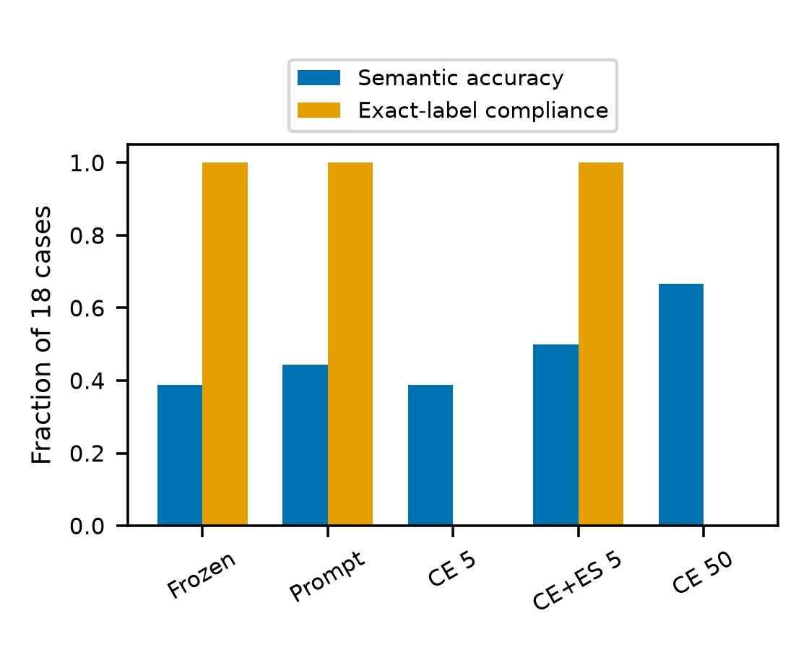
Semantic accuracy and exact-label compliance are recomputed separately. CE50 is 12/18 correct under the historical parser, 0/18 semantic-invalid and 0/18 exact-label compliant.
Exact-label check trims outer whitespace only for classification; raw strings remain unchanged in the evidence.
Vector SVG · Source values and hashes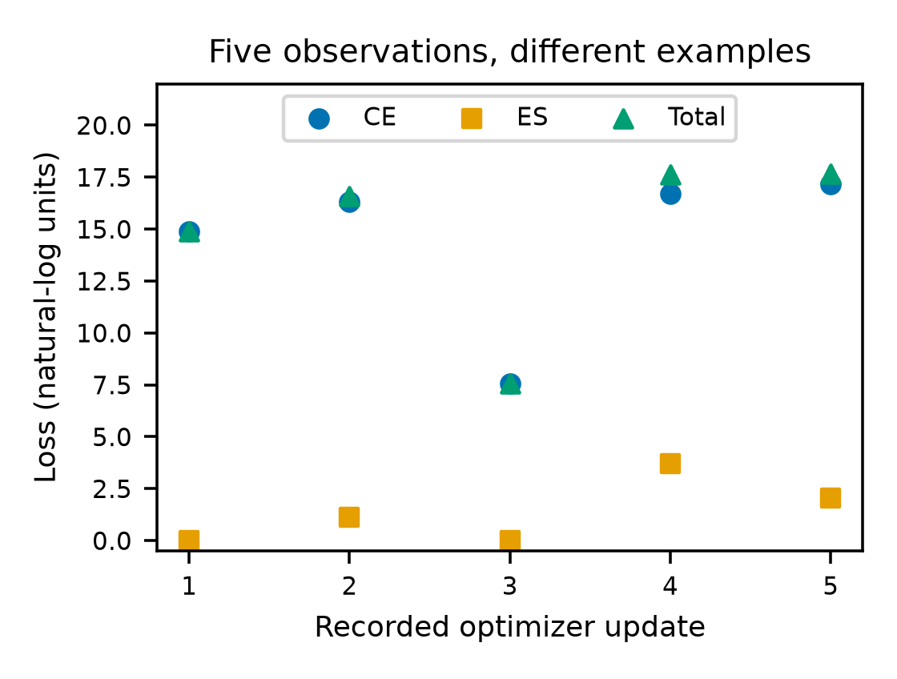
Exact observed CE, ES and CE+0.25 ES at five updates. No lines, smoothing or interpolated points are added.
Five selected updates cannot establish optimization convergence, method benefit or generalization.
Vector SVG · Source values and hashes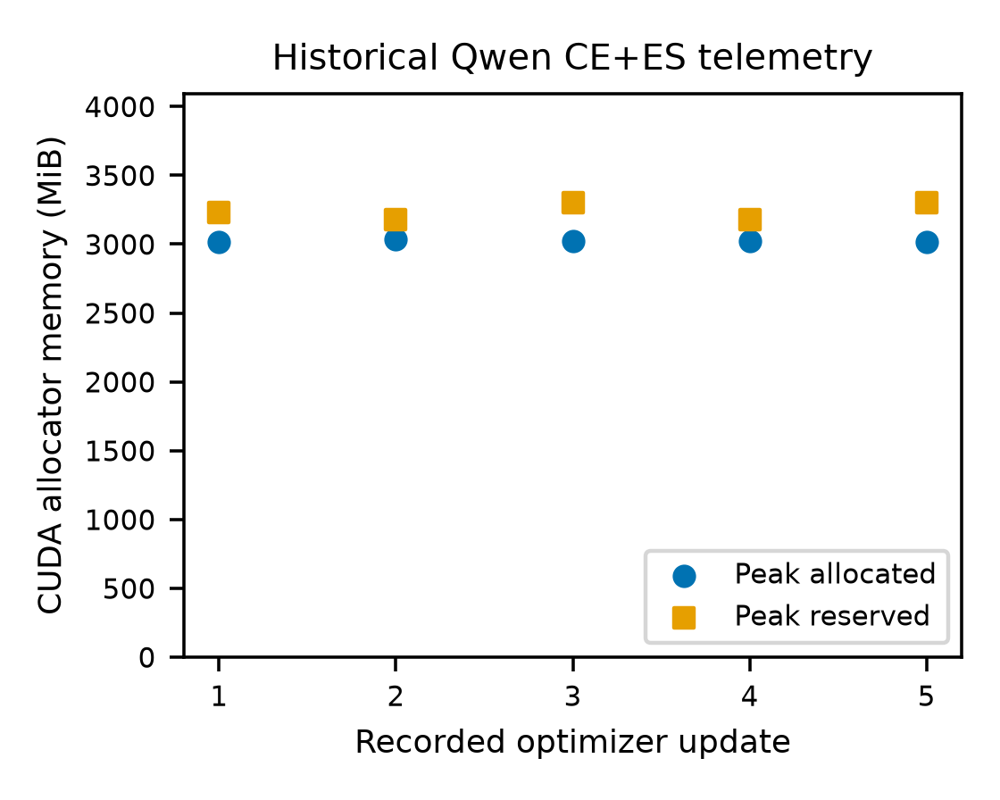
Per-update allocator maxima during the historical five-update pilot. Dedicated device capacity is 4096 MiB; allocator usage is distinct from sampled NVIDIA physical usage.
Sampled physical memory peaks can miss transient allocations. This mission made zero new model forwards and passed no replication RAM admission.
Vector SVG · Source values and hashes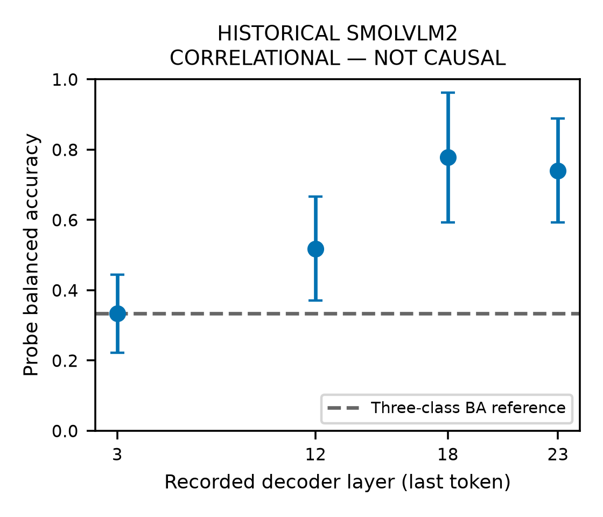
Historical SmolVLM2 last-token probe BA: layers 3/12/18/23 = 0.333333/0.518519/0.777778/0.740741. External probes used 81 training cases/27 families and 27 validation cases/nine families. Bars retain stored descriptive B=2000 family intervals.
Layer/selector/L2 selected on development data. BA independently checked from confusion counts; stored CI endpoints were not independently resampled in this mission. Separate from Qwen.
Vector SVG · Source values and hashes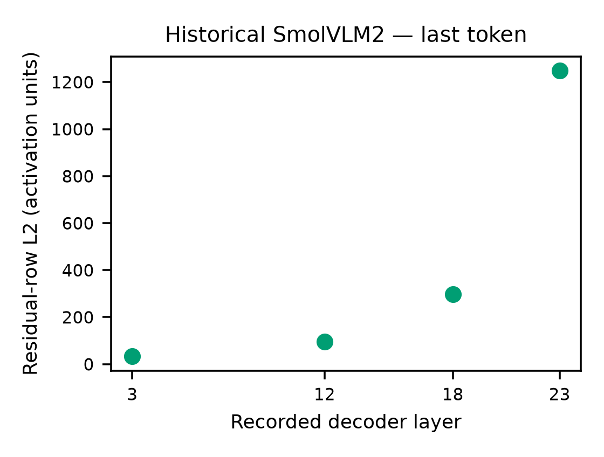
Stored residual-row L2 norms for p0d2_ctrl_forward_chain_0010_forward_chain; four sampled layers, last-token selector, 2048 coordinates per row. Norms were rechecked against saved vectors.
One historical capture; separate Smol model, no Qwen attribution, no intervening or unmeasured layers.
Vector SVG · Source values and hashes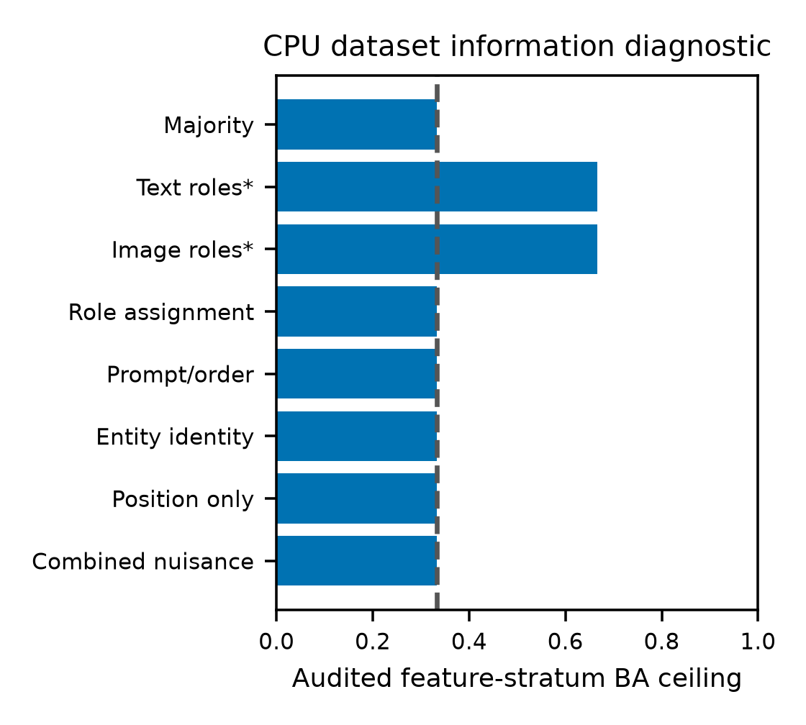
CPU feature-stratum balanced-accuracy ceilings on 9216 variants/six dependent families: audited nuisance features 1/3, single-modality oracle-parsed roles 2/3; joint symbolic oracle 1. Asterisks identify oracle-parsed role features.
Only listed features audited. These are design diagnostics, not VLM scores, exhaustive shortcut clearance or independent samples.
Vector SVG · Source values and hashes